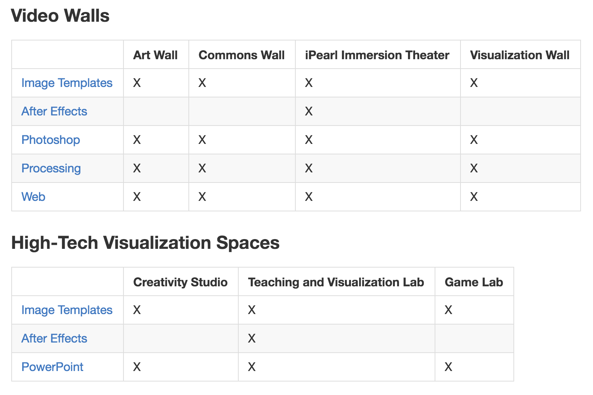
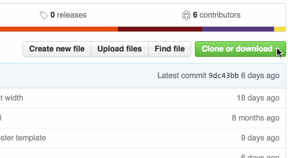

Git & GitHub Overview
Data Visualization Institute for Librarians
Heidi Tebbe | Bret Davidson
The Plan
- Why use version control systems?
- What is Git?
- What is GitHub?
- Evaluating software projects on GitHub.
- Using GitHub without the command line.
- Non-code uses for Git & GitHub.
How to save documents!
- annual.docx
- annual_final.docx
- annual_final_JC.docx
- annual_final_JC_2.docx
- annual_final_final.docx
- annual_final_final_corrected.docx
- FINAL_annual_final.docx
What does version control do?
- Records the history of changes to a set of related files inside of a "repository".
- Enables navigation of that change history.
- Supports sharing of the repository among a group of collaborators.
Two Kinds of Version Control
- Centralized
- Examples are CVS and Subversion
- Distributed
- Examples are Git and Mercurial
What is Git?
- Git is a distributed version control system.
- Original author is Linus Torvalds, of Linux fame.
- "I'm egotistical, and I name all my projects after myself."
- git means "unpleasant person" in British slang.
What is GitHub?
- GitHub is a Git repository hosting service.
- Adds services on top of Git like issues, wikis, and social networking.
checkout/clone
obtain a copy of a repository
pull/sync
update your local copy of repo to the latest version
branch
create a separate version of the files in the repo
commit
record a set of changes
push/publish
send your changes to the central or remote repo
Critical Features of GitHub
fork
create a copy (clone) in order to make your own changes
use someone else's project as a starting point
OR
propose changes to the original
pull request
mechanism for submitting your changes to original project
project owner "pulls" in your changes
Non-code Uses
- Knowledge Base
- Data Management
- Communication
Visualization Templates

Caveats

- No ZIP files for folders
- Not a digital asset management system
- Licenses
Communication
- Jupyter Notebooks
- GitHub Pages
Jupyter Notebooks
- interactive environments that can contain executable code, rich text, mathematics, plots
- support over 40 programming languages, including Python and R
- Jupyter Notebook App : server-client application that allows editing and running of notebook documents via a web browser
- Jupyter Notebook Viewer : free web service that allows you to share static versions of publicly available hosted notebook files
- render directly on GitHub
File and Repository Sizes
- git : no file size or file number limits
- GitHub repositories : 1 GB
- files added to GitHub via browser : 25 MB limit
- files added to GitHub via command line : 100 MB limit
- files stored using Git Large File Storage (LFS) : 2 GB limit
Public vs. Private
- git : private
- free GitHub account : public
- paid GitHub plans : public AND private
- students using GitHub : public AND private
Further Learning
Free Tutorials
Documentation